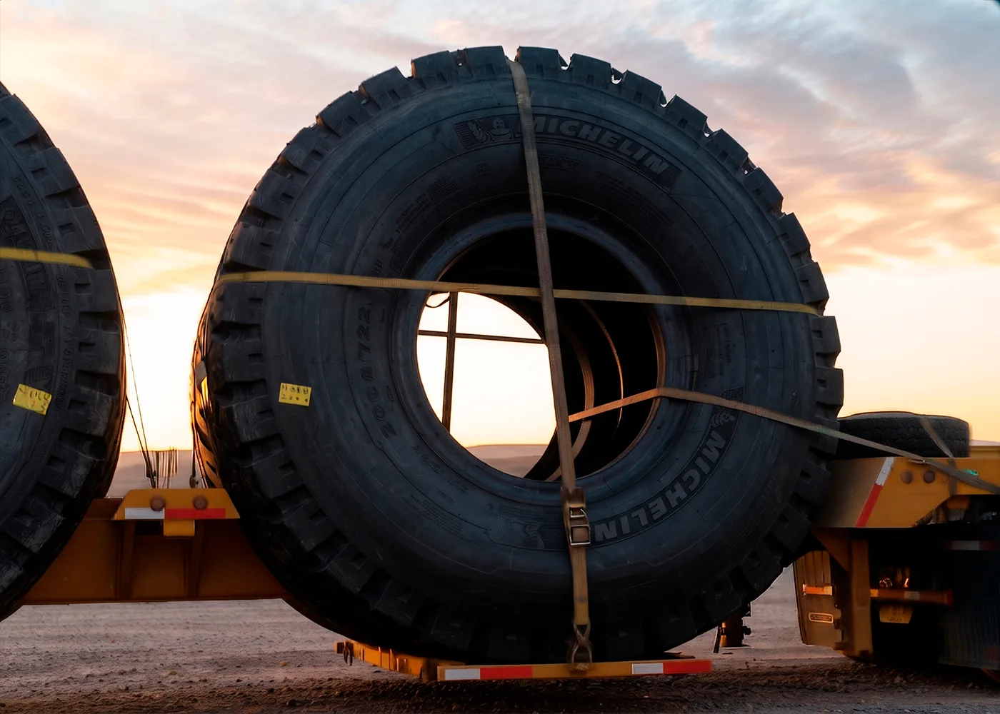
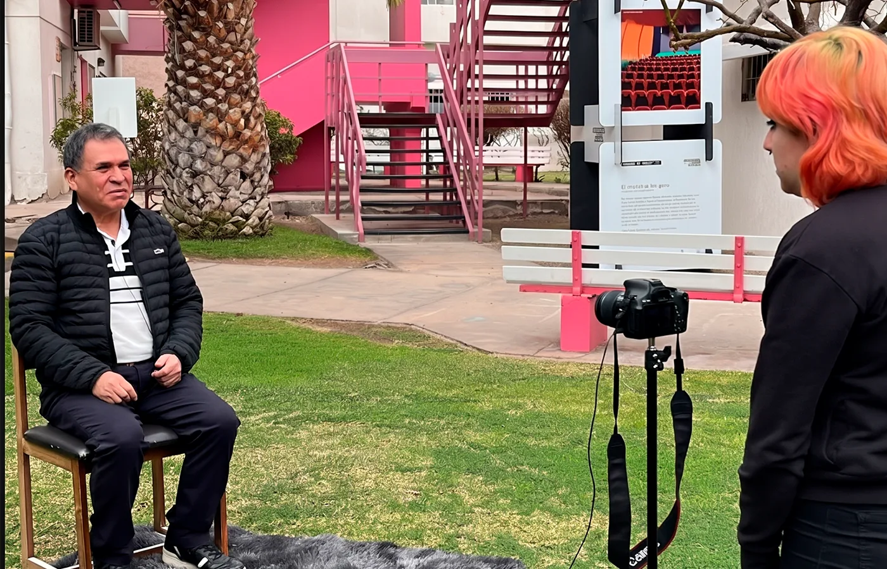
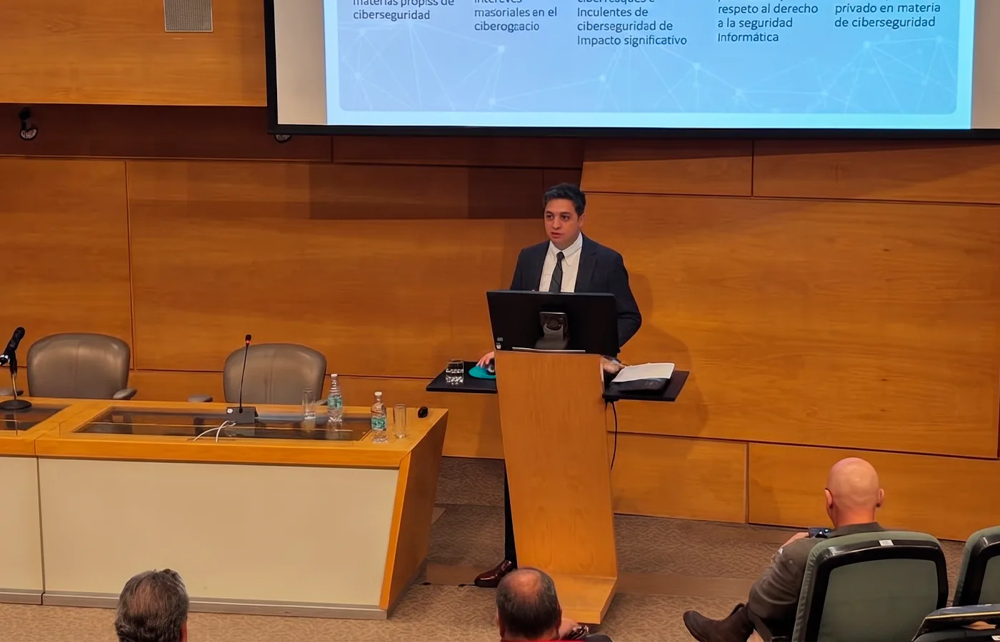

Ciberseguridad OT
Historias, novedades y perspectivas sobre la protección de sistemas de control, infraestructura crítica y tecnología operacional.
INFORMACIÓN · INDUSTRIA · TECNOLOGÍA
CiberIoT comunica y reúne contenidos sobre ciberseguridad OT, minería, industria, automatización e innovación tecnológica.
01 / ACTUALIDAD
Exploramos los avances, desafíos y protagonistas de los ámbitos que forman parte de la conversación de CiberIoT.
Historias, novedades y perspectivas sobre la protección de sistemas de control, infraestructura crítica y tecnología operacional.

02 / SECTORES PRODUCTIVOSNoticias, iniciativas y experiencias que muestran cómo la tecnología está transformando la minería y los procesos industriales.
Soluciones, tendencias y avances tecnológicos que están cambiando la forma de producir, operar y conectar la industria.
Esta área está preparada para reunir noticias, artículos y publicaciones de CiberIoT. Se agregarán contenidos originales o previamente difundidos en sus canales, con su fuente y enlace correspondiente.
02 / ENTREVISTAS
Conversaciones con especialistas, representantes y protagonistas de los ámbitos tecnológicos e industriales.
Perfiles, testimonios y conversaciones con especialistas, representantes y protagonistas de la tecnología y la industria.
Agregar fotografías de entrevistas realizadas, nombres de participantes, fecha, una breve reseña y el enlace al video o publicación original. Las imágenes actuales son solo referencias visuales.
03 / PROGRAMAS
Programas, espacios de conversación y formatos audiovisuales que forman parte de la propuesta comunicacional de CiberIoT.

Espacios audiovisuales, capítulos y conversaciones organizados por programa y temática.
Incorporar aquí los programas que efectivamente existan, sus portadas, descripción, participantes y enlaces a cada episodio. No se mostrarán programas ficticios como publicaciones activas.
04 / EVENTOS Y COBERTURAS
Un archivo de actividades, ferias, congresos y encuentros relevantes para las comunidades que sigue CiberIoT.

Ferias, congresos, seminarios y actividades relevantes para los sectores que sigue CiberIoT.
Reemplazar estas referencias por imágenes propias de actividades, instalaciones, charlas y coberturas realizadas por CiberIoT. Cada registro deberá incluir lugar, fecha y contexto.
05 / MULTIMEDIA
Entrevistas, programas, registros de eventos y otros contenidos audiovisuales se podrán consultar desde un mismo espacio, con enlaces a sus publicaciones originales.
Visitar el canal de YouTube ↗Se podrán destacar aquí publicaciones ya difundidas en Instagram, Facebook o LinkedIn, incorporando su vista previa o inserción oficial y un enlace al contenido original. La selección se hará con publicaciones reales de CiberIoT.
06 / CIBERIOT
La presencia pública de CiberIoT lo vincula con la comunicación y difusión de contenidos sobre ciberseguridad OT, minería, industria, automatización e innovación tecnológica.
La historia, el equipo, la línea editorial y las alianzas institucionales se incorporarán una vez que esos antecedentes sean confirmados por CiberIoT.
Consultar perfil institucional ↗07 / CONTACTO
Para compartir información, proponer una entrevista o cobertura, realizar una consulta o conversar sobre una colaboración, puedes contactar directamente al equipo.
Escribe al correo indicado y explica brevemente el motivo de tu mensaje. Si se trata de una propuesta editorial, incluye el tema, los participantes y cualquier antecedente que ayude a comprenderla.
Para consultas telefónicas, utiliza el número publicado. El equipo podrá orientarte sobre el canal adecuado para continuar la comunicación.
El correo y teléfono son datos públicos pendientes de confirmación antes de su publicación definitiva.